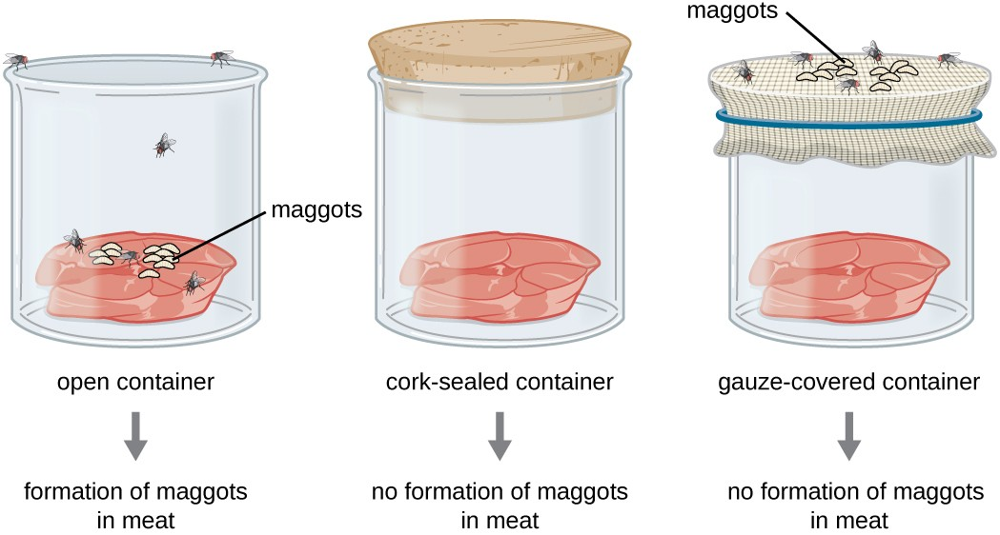
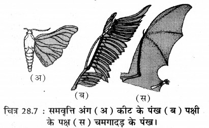
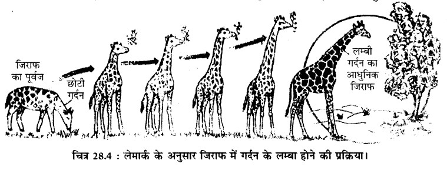

Organic evolution is that slow, gradual process of change as a result of which the extremely simple, lower-order organisms of ancient times developed into the complex, higher-order organisms of the present day.
The primitive form of the earth was like a burning mass of vapour. In it, atoms of all elements were present in the form of a ball of burning gases. Heavy atoms such as iron, nickel, etc. were at the centre, while lighter atoms such as hydrogen, carbon, nitrogen, etc. were towards the periphery.
Life began on earth approximately 400 crore (4 billion) years ago.
There are the following theories about how life originated on earth—
- Theory of Spores or Panspermia
- Theory of Spontaneous Generation
- Oparin-Haldane Theory
This theory states that life did not originate on earth itself; rather, the seeds of life (spores/microorganisms) came to earth from outer space and, under favourable conditions, developed into life.
Basis of the theory—
- The finding of biological molecules in certain meteorites.
- The survival of microorganisms even under the harsh conditions of outer space.
This theory states that life arises on its own from non-living matter, i.e. no pre-existing life is required for the origin of organisms.
Examples (according to this theory):
- Worms forming from rotten meat
- Frogs arising from dirty water
- Mice forming from rotten grain
This theory was accepted in ancient times, but was later proven false by the experiments of scientists such as Francesco Redi and Louis Pasteur.

Method of the experiment (Swan-neck flask experiment)
- Pasteur took a swan-neck (S-shaped) glass flask and filled it with nutrient broth.
- The broth was boiled to sterilise it (render it lifeless).
- The neck of the flask was kept open, but because of its S-shape, air could pass through while dust/microorganisms could not reach the inside.
Observation
- The broth remained clear for a long time, and no organism arose in it.
- When the neck of the flask was broken, or tilted to let dust reach the broth, microorganisms developed.
Conclusion
- Life did not arise spontaneously from the lifeless broth.
- The microorganisms came from pre-existing organisms present in the air.
Thus the theory of spontaneous generation was proved wrong, and it was proved that—"Life originates only from pre-existing life."
Setup of the experiment
Redi took three glass jars and placed an equal quantity of meat in each—
- First jar — kept open
- Second jar — covered with muslin/gauze
- Third jar — completely closed (sealed)

Observation
- In the open jar, worms (maggots) appeared after a few days.
- In the jar covered with gauze, no worms formed on the meat; flies sat on top of the gauze and laid their eggs there.
- In the completely sealed jar, neither did flies reach it nor did any worms form.
Conclusion
Worms did not arise on their own from the meat. They came from the eggs of flies, i.e. life originates only from pre-existing life.
Truth of the statement
Redi's experiment refuted the theory of spontaneous generation and proved that—"Life originates only from pre-existing life."
The concepts put forward by Oparin and Haldane regarding the origin of life are as follows—
- The primitive atmosphere of the earth was reducing in nature, and in that environment it was possible for a series of complex organic compounds to form from simple inorganic molecules in the presence of electrical discharge and ultraviolet rays.
- The first form of life must have developed from organic matter possessing the property of self-replication.
Objective of the experiment
To prove that, under the conditions of the primitive earth, organic compounds (such as amino acids) could form spontaneously from inorganic substances, which form the basis of the origin of life.
Setup of the experiment

In 1953, Stanley Miller and Harold Urey created an environment resembling the primitive earth inside a closed glass apparatus—
- Water (H₂O): representing the primitive ocean
- Gases: methane (CH₄), ammonia (NH₃), hydrogen (H₂)
- Energy source: electric spark (simulating lightning)
Procedure of the experiment
- Water was boiled in the lower flask to produce water vapour.
- The water vapour reached the upper chamber, where CH₄, NH₃, and H₂ were present.
- An electric spark was given there (the energy source).
- The mixture was cooled by a condenser and turned back into liquid.
- The liquid collected in the trap/collector below.
Result
After a few days, amino acids (such as glycine, alanine) and other organic compounds were found in the collector.
Conclusion
- The origin of life from inorganic → organic chemistry is possible.
- The conditions of the primitive earth were favourable for biochemical evolution.
- This experiment provides experimental support for the Oparin-Haldane theory.
According to scientists, life originated in the primitive ocean (water), because water was the most favourable medium for the beginning of life.
Main reasons—
- Water is an excellent solvent – the organic substances formed on the primitive earth could dissolve in water and react with one another.
Example: proteins were formed from amino acids in water. - Temperature regulation – water protects substances from sudden changes in temperature.
Example: the organic compounds formed were not destroyed. - The first organisms were aquatic – the oldest organisms were found in water.
Example: bacteria and algae. - Experimental evidence – in the Miller-Urey experiment, the organic compounds formed collected in water.
These reasons make it clear that life originated in water.

The process of organic evolution is studied with the help of various kinds of evidence.
- Evidence from comparative morphology and anatomy
- Evidence from palaeontology
- Evidence from vestigial organs
- Evidence from connecting links
- Evidence from comparative embryology
- Evidence from the geographical distribution of animals
Bodily structures in animals are of two types—
- Homologous organs — organs of animals that have a similar structure but perform different functions are called homologous organs.
Example: the human hand, the wing of a bat, and the foreleg of a horse have a similar structure, but their functions are different.

- Analogous organs — organs of animals that perform a similar function but whose internal structures are different are called analogous organs.
Example: the wings of insects, birds, and bats perform the function of flying, but their structure differs from one another.

| Homologous organs | Analogous organs |
|---|---|
| 1. Organs that share similarity in structure and origin are called homologous organs. | 1. Organs that perform a similar function despite differences in structure and origin are called analogous organs. |
| 2. They show similarity in internal structure. | 2. They are completely different in internal structure. |
| 3. The organisms possessing these organs are related from an evolutionary point of view. | 3. The organisms possessing these organs are unrelated from the point of view of organic evolution. |
| 4. Examples — the wing of a bat, the forelimb of a frog. | 4. Examples — the wing of a bird, the wing of a butterfly. |
The remains of ancient organisms found buried beneath rocks are called fossils.
For example, the fossils of Archaeopteryx, dinosaurs, early humans, etc. are good evidence for organic evolution.
Organic evolution can be proved through fossil records by means of the following examples.
- The evolution of the horse (development from a carnivorous to a herbivorous life).
- The evolution of the elephant (development from a carnivorous to a herbivorous life).
- The evolution of man (development from quadrupedal to bipedal locomotion).
- The Archaeopteryx fossil.
The age of a fossil is determined in the following ways.
- By determining the age of the rock in which a fossil is found, the age of the fossil is estimated.
- Besides this, the age of a fossil is also determined using radioactive carbon C14.
Organs that functioned fully in earlier ancestors but no longer function at all in present-day organisms, yet remain present in a rudimentary form, are called vestigial organs.
Example - in humans, the appendix, the tailbone, wisdom teeth, and the muscles for moving the ears are vestigial organs.

The existence of vestigial organs proves that organisms have evolved gradually from their ancestors.
Example: the appendix and tailbone in humans.
| Names of vestigial organs | Location in the human body |
|---|---|
| 1. Vermiform appendix | In the intestine |
| 2. Caudal vertebrae | At the terminal end of the spinal column |
| 3. Nictitating membrane | In the eye |
| 4. Wisdom teeth | In the mouth |
Organisms in which the characteristics of two different classes or species are found together, and which show the evolutionary link between them, are called connecting links.
Examples—
- Virus — a connecting link between the living and the non-living.
- Euglena — a connecting link between plants and animals.
- Peripatus — a connecting link between Annelida and Arthropoda.
- Neopilina — a connecting link between Annelida and Mollusca.
- Archaeopteryx — a connecting link between reptiles and birds.
- Echidna — a connecting link between reptiles and mammals.
All these examples are considered important evidence for organic evolution.
Or
What is divergent evolution?
When many species arising from the same ancestral organism adapt themselves to different environmental conditions and develop into different forms, this process is called adaptive radiation.
Examples—
- Darwin's finches — variation in beak shape on the Galapagos Islands.
- Australian marsupials — the development of kangaroos, koalas, etc. according to different habitats.
- Human forelimb — different forms for grasping, flying, swimming, etc.
Adaptive radiation clarifies diversity and organic evolution.

These organs are made of the same bones (such as the humerus, radius, ulna), but their functions are different. For instance—
- Human forelimb — for grasping and working
- Whale flipper — for swimming in water
- Bird's wing — for flying
This means that different functions have evolved from a similar structure. Hence, these are considered evidence of divergent evolution.
When organisms of different lineages develop similar forms or characteristics because of similar environmental conditions, this is called convergent evolution.
In this, these organisms, though biologically distinct, become similar or functionally alike.
Example:
- The eye of the owl and the eye of the fish — both belong to different lineages, but they developed a similar type of structure for seeing light.
- Winged birds and bats — both developed wings or wing-like organs for flying.
The major theories of organic evolution are as follows.
- Lamarck's theory or Lamarckism
- Darwin's theory or Darwinism
- The theory of mutation or Mutationism
- The modern concept of organic evolution
Lamarckism is that theory of organic evolution according to which organisms pass on the characteristics acquired during their lifetime to their offspring.
This theory was propounded by the French scientist Jean-Baptiste Lamarck. Its main principles are as follows.
- Law of use and disuse — an organ that is used more develops, while it becomes weak through disuse.
- Inheritance of acquired characteristics — characteristics acquired during a lifetime pass on to the next generation.
Example — the elongation of the giraffe's neck — by stretching its neck to reach leaves, the neck became long, and this acquired characteristic passed on to its offspring.

Characteristics that an organism acquires during its lifetime due to the environment, use-disuse, or practice, are called acquired characteristics.
Example — muscles becoming strong through exercise.
The main drawbacks of Lamarck's theory —
- The law of use and disuse is not universal — many organs do not develop despite being used.
- Acquired characteristics are not hereditary — according to modern genetics, characteristics acquired during a lifetime are not passed on to offspring.
- Lack of experimental evidence — there is no solid experimental evidence to prove Lamarckism.
The second major theory related to organic evolution is called Darwinism, which was presented by Charles Darwin. This theory is based on the following facts—
- Overproduction - every organism produces more offspring than necessary in order to maintain the survival of its species.
Example: the female pearl oyster lays about 1 million eggs at a time. - Struggle for existence - because resources are limited, organisms struggle for food, shelter, mates, and reproduction. This is of three types—
- (a) Intraspecific struggle — among members of the same species, since their needs are the same.
- (b) Interspecific struggle — among organisms of different species that depend on one another for nourishment.
- (c) Environmental struggle — struggle with environmental factors such as heat, rainfall, light, etc. Whichever is suited survives.
- Natural variations - organisms of the same species are not completely identical. Variations are found even among all the offspring of the same parents. These variations are the most important basis of organic evolution.
- Natural selection or survival of the fittest - nature selects only those organisms that possess useful and favourable variations. Darwin called this selection natural selection, while Herbert Spencer called it survival of the fittest.
- Origin of new species - the useful variations found in fit organisms keep accumulating generation after generation. Over a long period, these very variations combine to form new species.
Darwin's theory states that organic evolution is a slow, continuous, and natural process, which occurs through natural selection.
Main criticisms of Darwinism (in simple terms)
- Characteristics acquired during a lifetime were not considered in evolution.
- The cause of the origin of variations was not clear.
- There was no proper knowledge of genetics (genes) at the time.
- The sudden origin of new species was not explained.
- Sufficient evidence for natural selection was not available at that time.
| Lamarckism | Darwinism |
|---|---|
| Propounder — Jean-Baptiste Lamarck | Propounder — Charles Darwin |
| Cause of evolution is acquired characteristics | Cause of evolution is inborn variations |
| The law of use and disuse is central | Natural selection is central |
| Acquired characteristics are considered hereditary | Only favourable inborn characteristics are hereditary |
| Not accepted in modern science | Accepted in modern science |
Or
What is Modern Synthesis?
Modern Synthesis is that theory of organic evolution in which Darwin's natural selection is combined with Mendel's laws of genetics, mutation, and population genetics to give a complete explanation of evolution.
It is also called Neo-Darwinism.
This theory is mainly based on a coordination of the ideas of Charles Darwin and Gregor Mendel.
Modern Synthesis is based on the following facts—
- Mutation - sudden changes in genes produce new variations.
- Recombination - in sexual reproduction, the recombination of genes creates new genetic variations.
- Natural selection - nature selects organisms with favourable characteristics.
- Gene flow - the transfer of genes from one population to another.
- Genetic drift - random changes in gene frequency in a small population.
- Isolation - the formation of new species through geographical or reproductive isolation.
When genes are exchanged between two different populations of the same species due to the migration of individuals, this process is called gene flow.
Gene flow brings about change in the genetic makeup of populations, and it is an important cause of organic evolution.
Mutationism is the theory according to which organic evolution occurs due to sudden genetic changes (mutations), and not gradually.
This theory was presented by Hugo de Vries. Its main points are as follows.
- Mutations occur suddenly and bring about direct changes in genes.
- These changes are hereditary.
- New species can arise in a single generation.
- The role of natural selection is considered secondary.
Example — the sudden formation of new varieties in the evening primrose plant.
| Variation (Darwin) | Mutation (Hugo de Vries) |
|---|---|
| Small changes in the characteristics of organisms that are hereditary | Sudden, large changes in the genetic material (genes) or characteristics of organisms |
| The direction of change is fixed or orderly | The direction of change is irregular and directionless |
| Evolution is slow and gradual | Evolution is rapid and discontinuous |
| New characteristics accumulate gradually to form species | New characteristics can appear suddenly in the form of new species |
Hardy, a scientist from England, and Weinberg, a scientist from Germany, put forward the theory that the frequencies of genes in a population remain constant from generation to generation, provided no genetic change, mutation, or natural selection occurs.
Its main points are as follows.
- In this theory, the frequency of genes remains constant.
- No mutation or natural selection of any kind occurs in it.
Hardy and Weinberg developed the following mathematical equation to explain this.
Where —
p = frequency of one gene
q = frequency of the other gene
When the people of a small group (a founder group) leave their original place and settle in a new location, changes in gene frequency or new variations may arise in this new population. This process is called the founder effect.
Example - new populations settling on distant islands, in which development occurs differently from the original population.
(Explain the origin and evolution of man)
Man evolved from the ape lineage about 15 million years ago. Today, the ape lineage survives in the form of gorillas, chimpanzees, gibbons, and orangutans.
Dryopithecus
These were the ancestors of apes. Their remains are found in rocks of the Miocene and early Pliocene periods in North Africa, Tanzania, and the middle regions of Asia and Europe.
Characteristics-
- They resembled chimpanzees and apes.
- They walked like chimpanzees and gorillas.
- They had thick hair on their bodies.
- The human lineage began after Dryopithecus.
Ramapithecus
These were a sub-human form. Their fossils were found in the Shivalik hills of India in 1955; they existed on earth about 13 million years ago.
Characteristics-
- They looked similar to humans.
- The structure of their teeth and jaw was similar to that of humans.
- Their bodies had thick hair.
- Their height was less than 5 feet.
Homo habilis
The first human who began making stone tools for hunting, and is therefore called the first "tool maker man." They did not eat meat.
Characteristics-
- Their cranial capacity was between 650 and 800 cc.
- They lived in caves.
Their fossils were obtained by Dr. Leakey in Africa from rocks 2 million years old.
Homo erectus
These existed 1.5 million years ago.
Characteristics-
- Their brain was larger, with a cranial capacity of 900 cc.
- They lived in caves and probably ate meat.
Homo sapiens neanderthalensis
These lived 100,000 to 400,000 years ago in eastern and central Asian countries, and their fossils were obtained from the Neander valley in Germany.
Characteristics-
- Their brain size was 1400 cc (similar to modern humans).
- They used animal hides to protect their bodies.
- They buried their dead in the ground and probably believed in the immortality of the soul.
- They lived in huts and were omnivorous in nature.
Modern man
Modern man was born 75,000 to 100,000 years ago during the Ice Age. It developed in Africa and gradually spread across various continents, after which it developed into different races.
Characteristics-
- This is present-day man, whose cranial capacity is 1300 cc - 1600 cc.
- This human has a fully developed chin.
- There is a fully developed speech centre.
- It has a comparatively small forehead.
- There is less hair on the body.
- These are omnivorous by nature.
Agriculture was also begun by this human. Agricultural activity began about 10,000 years ago, and human settlements began to be formed.